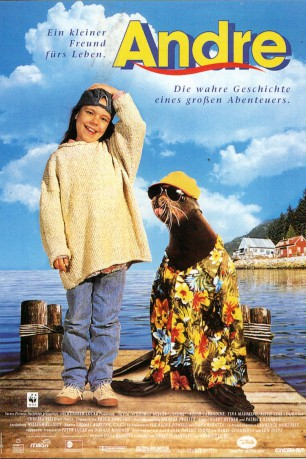

gesehen am 17.06.2019
gesehen am 17.06.2019Alternativ: Andre (Englischer Titel) gesehen am 17.06.2019
 
 IMDB-Wertung: 5.7 / 10
IMDB-Wertung: 5.7 / 10  Metascore:
Metascore: 
Die Freundschaft zwischen einer jungen Robbe und der Tochter des Hafenmeisters in einem amerikanischen Küstennest Anfang der 60er Jahre. Die tiefgreifenden Konflikte zwischen einem Fischer, der die Robben für die schlechten Fangergebnisse verantwortlich macht, und dem Hafenmeister lösen sich, als die Robbe ihre kleine Freundin aus größter (See-)Not retten kann.
Jahr: 1994
Dauer: 90 Minuten
FSK: 0
Land: USA Studio: Paramount PicturesTonspuren: DD5.1 - ,
Untertitel:
Auflösung: 1080p (1408x1080) Größe: 4935 MB
Genre: Drama, Abenteuer, Familie
Regisseur: George Miller
Drehbuch: Harry Goodridge, Lew Dietz, Dana Baratta
Soundtrack: Bruce Rowland
Darsteller:
 Chelsea Field als Thalice Whitney
Chelsea Field als Thalice Whitney Shane Meier als Steve Whitney
Shane Meier als Steve Whitney Keith Carradine als Harry Whitney
Keith Carradine als Harry Whitney Keith Szarabajka als Billy Baker
Keith Szarabajka als Billy Baker Joshua Jackson als Mark Baker
Joshua Jackson als Mark Baker Jay Brazeau als Griff Armstrong
Jay Brazeau als Griff Armstrong Andrea Libman als
Andrea Libman als  Bill Dow als
Bill Dow als  Frank C. Turner als
Frank C. Turner als  Gregory Smith als
Gregory Smith als  Duncan Fraser als
Duncan Fraser als  Gary Jones als
Gary Jones als  Teryl Rothery als
Teryl Rothery als Datei: X:\1994\André - Die kleine Robbe (1994, FSK0, 1408x1080).mkv seit 17.06.2019
Festplatte: Gemischt-01+Anime
 Es gibt insgesamt 67 Filme in der Gruppe '1994'
Es gibt insgesamt 67 Filme in der Gruppe '1994'